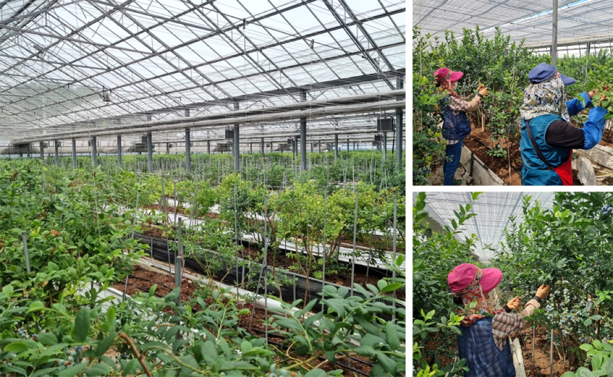
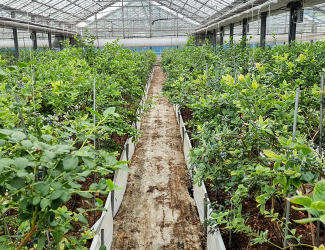
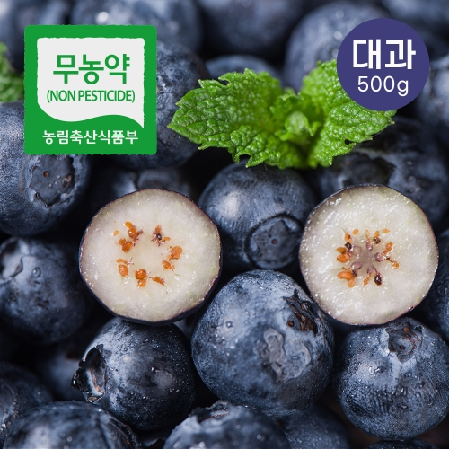

유리온실에서 키우는 블루베리
영글어농장은 약 70,000㎡ 부지에 자리한 유리온실을 기반으로 블루베리를 재배합니다. 체계적인 생산 관리로 안정적인 먹거리 공급 기반을 마련해 왔습니다.

스마트하게 살피는 농장
블루베리 스마트팜과 농장 모니터링 시스템으로 작물의 상태와 재배 환경을 살핍니다.

다양한 작물 재배
친환경 블루베리를 비롯해 딸기, 멜론, 고추, 감자, 엽채류 등 다양한 작물을 재배합니다.